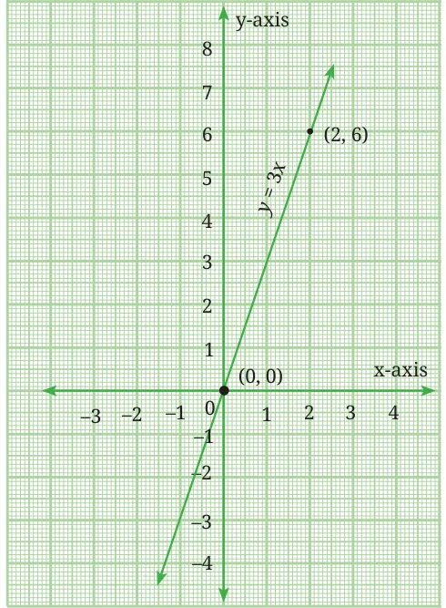

- The graph of the line \(y = 3x\), passing through (0, 0) and (2, 6) is given below.
- Identify the slope of the line from the graph and explain how you calculated it using the two points on the line.
- What is the y-intercept of the line? Explain its significance.
- A water tank is being filled so that the water level \(y\) (in cm) after \(x\) minutes follows this graph.

- How high is the water after 5 minutes?
- How many minutes will it take for the water to reach a height of 21 cm?
- Without drawing a new graph, determine whether the point (4, 10) lies on this line. Justify your answer.
- Plot the point where this line intersects the line \(x = 3\). Explain how you found the coordinates.
- In countries like the USA, temperature is measured in Fahrenheit, whereas in countries like India, it is measured in Celsius. Here is a linear equation that converts Celsius to Fahrenheit:
\(F = \dfrac{9}{5}C + 32\)
- Draw the graph of the linear equation above using Celsius on the x-axis and Fahrenheit on the y-axis.
- If the temperature is 30 °C, what is the temperature in Fahrenheit?
- If the temperature is 95 °F, what is the temperature in Celsius?
- If the temperature is 0 °C, what is the temperature in Fahrenheit and if the temperature is 0 °F, what is the temperature in Celsius?
- Is there a temperature which is numerically the same in both Fahrenheit and Celsius? If yes, find it.
- Solve the following system of equations graphically:
\(2x + y = 6,\ 2x - y - 2 = 0.\)
- Find the point of intersection of the lines shown on the cover page.
- Give a formula to find the x-intercept of the line \(y = mx + c\).
- A person is choosing between two mobile plans.
Plan A: ₹50 monthly fee + ₹0.20 per minute of call time.
Plan B: ₹30 monthly fee + ₹0.30 per minute of call time.
For how many minutes of calling per month is Plan A cheaper than Plan B? For how many minutes is Plan B cheaper? Also find the number of minutes at which both plans cost the same.
- How many lines exist that
- have a given slope?
- have a given slope and pass through a given point?
- For what values of \(p\) does the pair of equations given below have a unique solution?
\(4x + py + 8 = 0; \quad 2x + 2y + 2 = 0.\)
- Find the values of \(a\) and \(b\) for which the following system of equations has infinitely many solutions:
\((a + b)x - 2by = 5a + 2b + 1; \quad 3x - y = 14.\)
- Find the value of ‘\(k\)’ for which the following system of equations represents a pair of coincident lines:
\(x + 2y = 3; \quad (k - 1)x + (k + 1)y = k + 3.\)
- Robot 1 starts from the origin and traces a path by repeatedly moving 3 units to the right and then 4 units upward. Robot 2 starts from the point (10, 0) and repeatedly moves 1 unit to the right and then 2 units upward. Will the paths traced by these two robots intersect and if so, where?
- Robot 1 starts from (3, 0) and traces a path by repeatedly moving 5 units to the right and then 5 units upward. Robot 2 starts from the point (7, 0) and repeatedly moves 5 units to the right and then 3 units downwards. Will the paths traced by these two robots intersect and if so, where?
- * At a certain time, Jacob notices that his digital watch reads ‘\(a\)’ minutes after two o’clock. Fifteen minutes later, it reads ‘\(b\)’ minutes after three o’ clock. He noticed that \(a\) is six times greater than \(b\). What time was it when he looked at his watch for the second time?
- * The sum of the digits of a two-digit number is 15. The number obtained by interchanging the digits exceeds the given number by 9. Find the number.
- * In a cyclic quadrilateral ABCD, \(\angle A = (x + 7)^\circ\), \(\angle B = (y + 8)^\circ\), \(\angle C = (3y + 23)^\circ\) and \(\angle D = (4x + 12)^\circ\). Find all four angles of the cyclic quadrilateral.
- * A train moving with uniform speed for a certain distance takes 6 hours less if its speed is increased by 6 km/hour. It would have taken 6 hours more had its speed been decreased by 4 km/hour. Find the distance travelled and the speed of the train.
- * The age of a father is equal to the sum of the ages of his four children. After 20 years, the sum of the ages of the children will be twice the age of the father. Find the age of the father.
Chapter 13 · Two Variables One Line